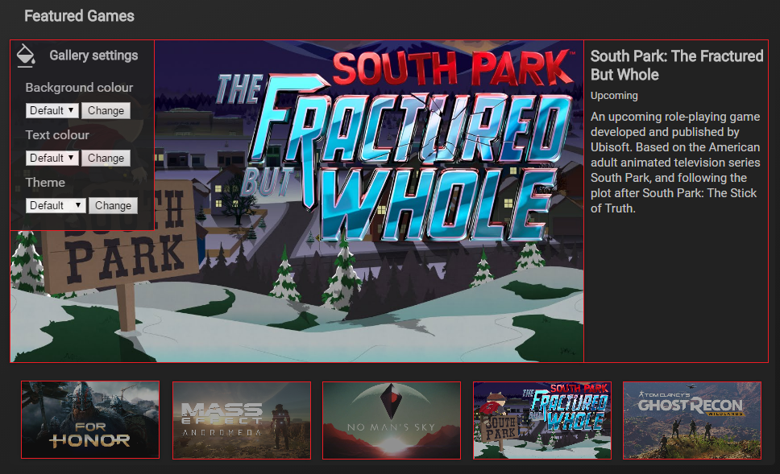

Gallery

For a website to be effective, following a set of design criteria is important in order to have a good design. This makes the website effective in a way that the webpages would be helpful and as the information and its content are not all disorganised and chaotic. Design matters so much that if it is not planned or thought of properly, it could result into the user's experience to be appalling and counter-intuitive if the design would conflict with its content.
Accessibility
Accessibility features help the website to be accessed by all users of all abilities and disabilities. In the elements covered, all of them include some of these features so that it would not just help the website itself to gain traffic but to also make the user's viewing experience much better as the content would be easily understood in addition to the content itself.
The gallery's form features which are the background colour selector, and text colour selectors has their own label so that it identifies what kind of data would be in the field. Adding an 'implicit' label helps screen readers for visually impaired people to specify for which label the label is.
<label for="background">Background colour: </label> An implicit label made for a select field with an ID called "background"
The images used in the gallery also use an accessibility feature called alternative text. An alternative text can be used to provide a description of the image in case the image does not load or that the user has disabled images to show in their browser.
<img src="gallery/for_honor.jpg" alt="For Honor">An example of how alternative text was implemented for the image.
There is also a global attribute whereby it shows a small tooltip text when the mouse is hovered. This is helpful when providing hints on where does a link go, additional description to images, and so on. An example of a tooltip is shown below.
Typography
- Press Start 2P
- Roboto
This font is the website's logo, and it's an 8-bit font which is can be associated with old games since there are a lot iconic old games. Choosing this font as the logo's font could give the impression especially to the intended audience which are gamers that this website is about or related to games. The chosen font size under the CSS styling is to be 40px. This is because this font size results into the logo to span the right amount in proportion to the navigation menu.
Also as you can see that each letters has a 'stroke' outline, outlining each letter to make it stand out even more. It also gives a less flat look of normal text to differentiate frmo actual text content.
Roboto is a sans-serif font which is an ideal type of font to this website because a gaming website is supposed to look and feel casual. Therefore using this as the whole page's font gives a mellow look to it, giving a feeling that this website isn't anything about serious stuff and could be merely about entertainment.
The font size of the body text is the default 16px which is just enough to display most of the body text.
Colour contrast
Colour contrast is important to think about when creating a website. This is because a good contrasting text and background would have a high impact on the content's readability. Readability is very important on websites as this is one of the prominent ways to show content in websites. Below are test calculating the contrast ratio of the colours used in the website to see if they pass the standards Web Content Accessibility Guidelines, which are a set of rules to see if websites are accessible to everyone.
Using @leaverou's contrast ratio checker, the ratio that is considered to be good has to be 7 and above. The results are the following:
- Default text colour to gallery's background colour
- Default text colour when a link is hovered compared to the sitemap's and gallery's background
- Theme 1's text colour to its respective background
- Theme 2's text colour to its respective background
- Theme 3's text colour to its respective background
Colour balance and combination
- Colour balance
- Colour combination
The monochrome balance of the gallery allows the images to appear colourful and the illusion of standing out.
In the default theme of the gallery, the gallery lacks in colour combination since it only has monochromatic theme. The gallery matches the website's colour scheme so that the website would look consistent.
There are also some other themes that were implemented to improve the gallery's colour combination and make the gallery a bit more colourful.
Theme 1
Theme 2
Theme 3
These different themes along with the colour scheme of the website makes the gallery look vibrant and stands out even more.
Sitemap page content
Sitemap with the Games link hovered
The sitemap's colour balance is a better in its little way that there are a lot more links to the sitemap and that when each link is hovered, it would light up with the colour blue.
Gestalt principles of grouping
The Gestalt principles of grouping is concerned with how the people visually perceive objects and group them according to the rules that the principles have. In web design, this is a good set of principles to follow as this makes the elements in the page grouped and would know what each section would be for. A good example is shown below using the gallery.
By applying the Gestalt principles of grouping to the screenshot above, we can say the following to the gallery:
- Proximity
- Similarity
- Continuation
- Common Fate
Each element are far away from each other using enough paddings and margins in the CSS to the appropriate elements.
The similar elements such as the form, description, bigger image display, and its thumbnails are grouped in just one section so it would be easy for the user to distinguish each kind of element from the others. As oppose to the opposite of this principle, each element would be all over the place and would be hard for the user which element is which and how to interact or comprehend the elements.
There are not a lot of elements that fall under this category but there is a slight cut of the image when the settings are brought up since the settings have an opaque setting, it would show the bigger image's continuation. This is done in this way so the user would hint and remind them that the gallery can be closed and opened since there is an element behind it.
Not shown on the image but there are also animations when opening the settings and when switching in between the thumbnails. This gives the impression to the user that the elements in the settings when opened that when it is closed it would close the elements that came up when the animation was initiated. The same goes when switching in between the thumbnails since they would create a slight glow when the user's mouse is over the image to be displayed on the bigger image. Since they all have the same animations the user would know that they are similar and could tell that they could do the same action to the similar elements.
Some of the points above could be applied to the sitemap page created for the website. A screenshot is provided below with how the elements are divided. One of the main principles used in here is proximity as there is padding, margin, and border to divide the elements.